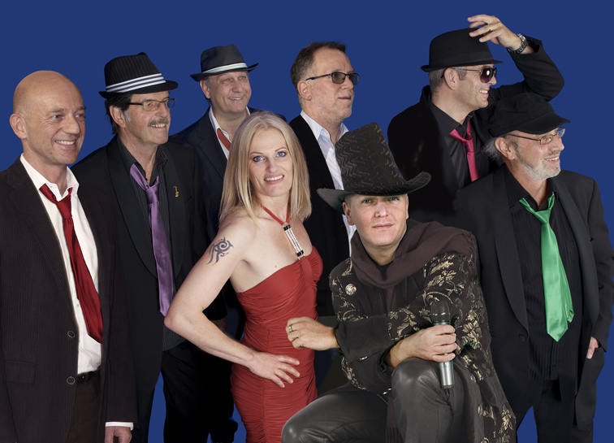

Das Erfolgsrezept von DOWNTOWN ist bestechend einfach. Die groovende und soulige Coverband mischt die Hits der 70er, 80er und 90er Jahre mit den Hits der heutigen Superstars. Aretha Franklin trifft auf Duffy, The Commodores auf Amy Winehouse und James Brown auf Adele. Heraus kommt dabei ein hochprozentiger, unwiderstehlicher Live-Partycocktail, welcher durch die musikalische Bandbreite und den einzigartigen satten und groovigen Sound jeden Zuhörer zum Tanzen verführt.
Für Ihren Anlass kreieren wir die richtige Atmosphäre, Kundenzufriedenheit steht bei uns an erster Stelle. Jahrelang erfolgreich in der Musikszene, ist unsere Band zu einer namhaften Live-Formation der Schweiz herangewachsen. Durch stetiges Weiterentwickeln sind wir mit unseren Instrumenten ohne Playbacks oder Computer in den unterschiedlichsten Stilrichtungen zuhause und brillieren mit spontaner, purer Livemusik. Die langjährige Erfahrung erlaubt uns, sich Ihrem gewünschten Projekt anzupassen:
- Partyband für ausgelassene Events mit breitbandigem Repertoire
- Hochzeitsband im kleinen wie im grösseren Rahmen
- Unterhaltungsband für Firmenanlässe, Geburtstage, Eröffnungen
- Galaband für Bälle oder Tanzabende